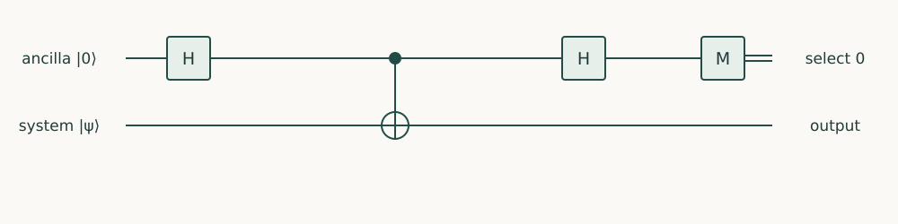

Starting point: Earlier programming chapters; relevant constructions from Quantum Computing and Quantum Algorithms.
Anchor example: Construct a small matrix embedding and verify its encoded action.
This lesson includes explanations, worked examples, and problems with solutions. Advanced results whose proofs are outside the chapter are identified explicitly.
Our hybrid loop estimated an observable, a sum of two Pauli strings. The advanced constructions of the algorithms course go further: they transform operators. They approximate a time evolution \(e^{-iHt}\), embed a matrix that is not unitary inside one that is, and apply polynomials to such embedded matrices. In a circuit diagram each appears as a single box.
How do we implement operator transformations with explicit resource costs? Each box hides two separate questions. How accurately does it implement its target? And when it works only if an auxiliary qubit gives a selected outcome, how often does that happen? We answer the first for a product formula, where an error bound tells us how many steps to take. We answer the second for an embedding of a non-unitary matrix, where the success probability depends on the input. Polynomial transformations combine both, and their cost depends on far more than the polynomial’s degree.
Every example is small enough to check against its exact matrix.
15.1 Hamiltonian Simulation
Suppose we must implement \(e^{-iHt}\) for \(H=X+Z\) and \(t=1\). We have rotations about X and about Z, but none about the axis of \(X+Z\). Can we build the evolution from the pieces we have, and how accurately? We write the circuit first, then bound its error.
15.1.1 Product-formula circuits
The natural attempt is to apply the two terms one after the other: \(e^{-iX}e^{-iZ}\). That would be exact if \(X\) and \(Z\) commuted, but they do not. Splitting the time into \(r\) short steps helps, because over a short step the terms almost commute. So we approximate \[e^{-i(X+Z)}\approx\left(e^{-iX/r}\,e^{-iZ/r}\right)^r.\] An approximation of this kind is a product formula.
Which gates give each factor? Qiskit defines \(R_z(\theta)=e^{-i\theta Z/2}\), with a factor one half in the exponent. So \(e^{-iZ/r}\) is \(R_z(2/r)\), and likewise \(e^{-iX/r}\) is \(R_x(2/r)\). Each step appends rz and then rx. Since the gate applied last stands on the left, a step has the matrix \(R_x(2/r)R_z(2/r)\), which matches the formula. The companion compares the result with the exact \(e^{-i(X+Z)}\), computed by SciPy’s matrix exponential expm. That classical calculation is cheap only for tiny matrices, which is why it serves only as a reference for this small check.
Problem 15.1. Why is the rotation angle 2/r rather than 1/r?
Worked solution
Qiskit’s Pauli rotation convention has a factor one half in the exponential. Using 1/r would simulate half the intended term strength.
15.1.2 Time and approximation error
How large must \(r\) be? To answer, we need a bound on the error, and we use a quoted result. For Hermitian \(A\) and \(B\), the first-order product formula satisfies \[\left\|e^{-i(A+B)t}-\left(e^{-iAt/r}e^{-iBt/r}\right)^r\right\|\le\frac{t^2}{2r}\,\bigl\|[A,B]\bigr\|,\] where \([A,B]=AB-BA\) is the commutator (see Childs and coauthors, “Theory of Trotter error”). The norm here is the operator norm, the largest factor by which a matrix can stretch a unit vector. A bound in this norm therefore holds for every input state.
For our terms, \([X,Z]=XZ-ZX=-2iY\), and \(\|Y\|=1\), so \(\|[X,Z]\|=2\). With \(t=1\) the bound is \(1/r\). In NumPy, np.linalg.norm(M, 2) computes the operator norm, and the companion asserts that the error is at most \(1/r\) for \(r=10,20,40\). The measured errors were about \(0.070\), \(0.035\) and \(0.017\), so they halve as \(r\) doubles, as a \(1/r\) bound suggests.
This error belongs to the method, and we report it separately from sampling and hardware noise. Increasing \(r\) shrinks it but adds gates, and each gate adds noise on a device. So on hardware the best \(r\) can be a finite number, not the largest we can afford.
15.2 Operator Embeddings
Many algorithms need to apply a matrix that is not unitary, such as \(A=(I+X)/2\). A circuit can only apply unitaries. How can a unitary circuit act like \(A\)? The answer uses an ancilla and a selected measurement outcome, and it has a price, a success probability. We first set up the embedding and its normalization, then build one from a combination of unitaries.
15.2.1 Ancillas and normalization
Suppose we find a unitary \(U\) on an ancilla and the system whose block for ancilla \(\ket0\) in and \(\ket0\) out is \(A/\alpha\): \[U=\begin{pmatrix}A/\alpha&\ast\\\ast&\ast\end{pmatrix}.\] Then \(U\ket0\ket\psi=\ket0\,(A\ket\psi/\alpha)+\ket1\,(\cdots)\). If we measure the ancilla and get 0, the system holds \(A\ket\psi\), normalized. This is a block encoding of \(A\), and \(\alpha\ge\|A\|\) is its scale factor, needed because a block of a unitary cannot stretch any vector.
What does it cost? The outcome 0 occurs with probability \(\|A\ket\psi\|^2/\alpha^2\), which depends on the input. So the interface of a block encoding includes its scale \(\alpha\) and its number of ancillas. We also check two different things. A check of matrix entries verifies the encoding. A probability check on a particular state tells us how often the selection will succeed.
15.2.2 Linear combinations of unitaries
How do we build a block encoding of \((I+X)/2\)? It is an average of two unitaries, \(I\) and \(X\). Could we pick one of them at random? That produces a mixture of \(\ket\psi\) and \(X\ket\psi\), not the vector \((\ket\psi+X\ket\psi)/2\). We need the two to interfere.
So we let an ancilla choose coherently. H on the ancilla gives \((\ket0\ket\psi+\ket1\ket\psi)/\sqrt2\). A CNOT from the ancilla applies X in the \(\ket1\) branch, giving \((\ket0\ket\psi+\ket1X\ket\psi)/\sqrt2\). A second H on the ancilla gives \[\ket0\,\frac{\ket\psi+X\ket\psi}2+\ket1\,\frac{\ket\psi-X\ket\psi}2.\] The ancilla-0 block is \((I+X)/2\), with \(\alpha=1\). This construction is a linear combination of unitaries, or LCU.
Where is that block in the matrix? In the companion the ancilla is q1, the high bit, so indices 0 and 1 are the ones with ancilla 0. The block is therefore the top-left \(2\times2\) slice, [:2, :2]. With the ancilla on q0 instead, the correct slice would be different.
Problem 15.2. What is the success probability of the LCU example on system zero?
Worked solution
The selected vector is (|0〉+|1〉)/2, with squared norm one half. The normalized conditional state is plus.

An encoding of (I+X)/2. Select ancilla outcome zero to obtain the desired sum on the system; success depends on the input state.
15.3 Polynomial Transformations
With a block encoding of \(A\), can we apply \(A^2\), or another polynomial of \(A\), by calling the encoding several times? The obvious attempt fails, and the method that works, quantum signal processing, comes with conventions that a program must fix. We look at the phase sequences first, then at how to verify them and what they cost.
15.3.1 Phase sequences
The simplest case has a one-qubit signal unitary whose selected block is a number \(x\) between \(-1\) and \(1\): \[W(x)=\begin{pmatrix}x&i\sqrt{1-x^2}\\i\sqrt{1-x^2}&x\end{pmatrix}=xI+i\sqrt{1-x^2}\,X.\] Does calling \(W\) twice give the block \(x^2\)? The top-left entry of \(W^2\) is \(x\cdot x+(i\sqrt{1-x^2})^2=2x^2-1\). Amplitude that left the selected block in the first call returned to it in the second, adding \(-(1-x^2)\). So repeating a block encoding does not, in general, square its block.
Can we control what comes back? Yes, by placing phase rotations \(e^{i\phi_kZ}\) between the calls. This is quantum signal processing, from the algorithms course. We quote its main result: with \(d\) calls, a suitable list of phases makes the selected entry any polynomial \(P(x)\) of degree at most \(d\), with the same parity as \(d\), and satisfies \(|P(x)|\le1\) on \([-1,1]\), together with a further condition on a companion polynomial. Polynomials meeting those conditions are called admissible. With all phases zero and two calls, we get \(2x^2-1\), the Chebyshev polynomial \(T_2\).
Different sources write the signal and the phases with different signs, orders and selected blocks. A phase list computed under one convention gives a different polynomial under another. So before using a phase list from a paper or a package, we fix the sign convention, the order of operations, the selected block and the target polynomial.
15.3.2 Verification and compilation costs
How do we check a phase sequence? First, evaluate the polynomial it produces at sample points and at the edges of the promised interval. Then test the matrix action on small encoded examples. The companion does the first kind of check for \(W\): at 21 points from \(-1\) to \(1\) it confirms that \(W\) is unitary and that the top-left entry of \(W^2\) is \(2x^2-1\). It uses max(0, 1-x*x) so that rounding cannot make the square root’s argument slightly negative at \(x=\pm1\).
Checking points is not a proof. A promise that the polynomial approximates some function to within \(\epsilon\) everywhere on the interval must come from the construction itself.
What does the transformation cost? The degree counts calls to the encoding, but each call may be a large circuit. The scale \(\alpha\) lowers the success probability, which may require amplification. The phases must be synthesized, and everything must be compiled. A resource report charges each of these. The companion verifies the two building blocks the larger constructions rest on, the product formula and the LCU encoding.
"""Runnable companion for Quantum Programming, Chapter 15."""
import numpy as np
from qiskit import QuantumCircuit
from qiskit.quantum_info import Operator
from scipy.linalg import expm
X = np.array([[0, 1], [1, 0]])
Z = np.diag([1, -1])
errors = []
for steps in (10, 20, 40):
qc = QuantumCircuit(1)
for _ in range(steps):
qc.rz(2/steps, 0)
qc.rx(2/steps, 0)
error = np.linalg.norm(Operator(qc).data - expm(-1j*(X+Z)), 2)
assert error <= 1/steps + 1e-12
errors.append(error)
# An LCU encoding of (I+X)/2: ancilla q1, system q0.
lcu = QuantumCircuit(2)
lcu.h(1); lcu.cx(1, 0); lcu.h(1)
assert np.allclose(Operator(lcu).data[:2, :2], (np.eye(2)+X)/2)
print("Product-formula errors:", errors)
# Verify the low-degree signal response independently of a synthesis package.
for x in np.linspace(-1, 1, 21):
W = x*np.eye(2) + 1j*np.sqrt(max(0, 1-x*x))*X
assert np.allclose(W.conj().T @ W, np.eye(2))
assert np.isclose((W @ W)[0, 0], 2*x*x-1)
Problem 15.3. Why cannot a degree count alone specify total cost?
Worked solution
Each signal call may contain a large encoding circuit, and success amplification or gate synthesis adds work. The access implementation matters.
Each chapter has ended with a program that passed its checks once, on one machine. What would it take for someone else to obtain the same result independently, from our code and our records alone?
These exercises draw on the whole chapter. Attempt each question before opening a hint, explain your reasoning, then compare it with the worked solution.
To simulate \(e^{-i(X+Z)t}\) for \(t=2\) with \(r=10\) first-order steps, what angle should each rz and rx receive? Why is it not \(t/r\)?
Hint 1
\(R_z(\theta)=e^{-i\theta Z/2}\).
Hint 2
Each step needs \(e^{-iZt/r}\).
Worked solution
Each step needs \(e^{-iZt/r}\), and \(R_z(\theta)=e^{-i\theta Z/2}\), so \(\theta=2t/r=0.4\); likewise for rx. Using \(t/r\) would simulate half the intended time. The factor of two comes from the convention of Qiskit’s rotation gates and must be checked against the formula, as the chapter does.
For the LCU encoding of \(A=(I+X)/2\) (ancilla q1, system q0), compute the probability that the ancilla reads \(0\) for system inputs \(\ket0\), \(\ket+\), and \(\ket-\). Explain the three values.
Hint 1
Success probability \(\|A\ket\psi\|^2\).
Hint 2
\(X\ket\pm=\pm\ket\pm\).
Worked solution
\(\ket0\): \(\|(\ket0+\ket1)/2\|^2=\frac12\). \(\ket+\): \(A\ket+=\ket+\), probability \(1\). \(\ket-\): \(A\ket-=0\), probability \(0\): the two terms cancel completely. The success probability depends on the input, which is why a block encoding’s cost must be stated for the inputs it will see.
import numpy as np
from qiskit import QuantumCircuit
from qiskit.quantum_info import Statevector
lcu = QuantumCircuit(2)
lcu.h(1)
lcu.cx(1, 0)
lcu.h(1)
expected = {"0": 0.5, "+": 1.0, "-": 0.0}
for label, probability in expected.items():
state = Statevector.from_label("0" + label).evolve(lcu)
assert np.isclose(state.probabilities_dict(qargs=[1]).get("0", 0), probability)
Rebuild the LCU circuit with the ancilla on qubit 0 and the system on qubit 1. Which rows and columns of the operator now form the selected block?
Hint 1
The selected block has ancilla \(=0\).
Hint 2
With the ancilla as the low bit, those are indices \(0\) and \(2\).
Worked solution
With the ancilla as qubit 0 (the low bit), ancilla \(=0\) corresponds to indices \(0\) and \(2\), so the block is the submatrix with rows and columns \([0,2]\), not the top-left \(2\times2\) corner. Extracting the wrong slice would “verify” a different matrix. The ancilla’s position must be part of the encoding’s documented interface.
import numpy as np
from qiskit import QuantumCircuit
from qiskit.quantum_info import Operator
lcu = QuantumCircuit(2)
lcu.h(0)
lcu.cx(0, 1)
lcu.h(0)
matrix = Operator(lcu).data
X = np.array([[0, 1], [1, 0]])
assert np.allclose(matrix[np.ix_([0, 2], [0, 2])], (np.eye(2) + X) / 2)
Compare the first-order product formula with the symmetric second-order formula, rx(\(1/r\)), rz(\(2/r\)), rx(\(1/r\)) per step, for \(H=X+Z\), \(t=1\), and \(r=10,20,40\). Compute both errors against the exact unitary and describe how each scales with \(r\).
Hint 1
Compute the exact unitary from the eigendecomposition of \(X+Z\).
Hint 2
Compare errors when \(r\) doubles.
Worked solution
First order: about \(0.070\), \(0.035\), \(0.0175\), halving with each doubling of \(r\) (error \(\propto1/r\)). Second order: about \(2.7\times10^{-3}\), \(6.8\times10^{-4}\), \(1.7\times10^{-4}\), falling fourfold (error \(\propto1/r^2\)). The symmetric formula costs only slightly more per step, since adjacent half-steps merge, yet is far more accurate.
On hardware, each rotation has error about \(10^{-3}\), so a first-order simulation with \(r\) steps (two rotations each) has total error roughly \(0.7/r+2\times10^{-3}r\). (a) Find the \(r\) that minimizes it and the minimum. (b) Compare with \(r=100\). (c) How does the second-order formula change the picture?
Hint 1
Minimize \(a/r+br\): \(r^*=\sqrt{a/b}\).
Hint 2
\(\sqrt{0.7/0.002}\approx19\).
Worked solution
(a) \(r^*=\sqrt{0.7/0.002}\approx19\), giving \(0.7/19+0.038\approx0.075\). (b) At \(r=100\): \(0.007+0.2=0.207\), almost three times worse. (c) With a second-order error near \(0.27/r^2\), the optimum moves to far fewer steps (about \(r\approx6\) to \(7\), total near \(0.03\)), because each step is more accurate. On noisy hardware the best formula and step count balance algorithmic and gate errors.
Build an LCU encoding of \((Z+X)/2=H/\sqrt2\): H on the ancilla (qubit 1), apply Z to the system when the ancilla is \(0\) and X when it is \(1\), then H on the ancilla. (a) Verify the top-left block. (b) Show that the success probability is \(\frac12\) for every input. (c) Why does this make the encoding a candidate for oblivious amplification?
Hint 1
Apply Z conditioned on ancilla \(0\) by wrapping a CZ with X on the ancilla.
Hint 2
\(\|H\ket\psi/\sqrt2\|^2=\frac12\).
Worked solution
(a) The top-left \(2\times2\) block equals \(H/\sqrt2\). (b) Since \(H\) is unitary, \(\|H\ket\psi\|^2/2=\frac12\) for every input. (c) An encoded matrix proportional to a unitary, with input-independent success probability, is exactly the situation in which oblivious amplitude amplification can boost success to certainty without knowing the input, as Quantum Algorithms Chapter 7 develops.
import numpy as np
from qiskit import QuantumCircuit
from qiskit.quantum_info import Operator, random_statevector, Statevector
lcu = QuantumCircuit(2)
lcu.h(1)
lcu.x(1); lcu.cz(1, 0); lcu.x(1) # Z on the system when the ancilla is 0
lcu.cx(1, 0) # X on the system when the ancilla is 1
lcu.h(1)
H = np.array([[1, 1], [1, -1]]) / np.sqrt(2)
assert np.allclose(Operator(lcu).data[:2, :2], H / np.sqrt(2))
for seed in range(3):
system = random_statevector(2, seed=seed)
state = Statevector.from_label("0").tensor(system).evolve(lcu)
assert np.isclose(state.probabilities_dict(qargs=[1])["0"], 0.5)
For the scalar signal \(W(x)=xI+i\sqrt{1-x^2}X\), verify numerically that (a) the top-left entry of \(W^3\) is \(T_3(x)=4x^3-3x\), and (b) inserting the phase \(\mathrm{diag}(e^{i\phi},e^{-i\phi})\) between two calls gives \(\cos\phi(2x^2-1)+i\sin\phi\). Use \(x=0.3\), \(x=-0.7\), and \(\phi=0.4\).
Hint 1
Build \(W\) as a numpy matrix.
Hint 2
Compare entries with numpy.isclose.
Worked solution
Both identities hold at the sample points: the three-call response is \(4x^3-3x\), and the phased two-call response is \(\cos\phi(2x^2-1)+i\sin\phi\). Point checks catch convention errors (sign of \(i\), order of phases, which entry is selected) before a phase list from a synthesis tool is trusted. They do not prove the bound on a whole interval, which must come from the construction.
import numpy as np
X = np.array([[0, 1], [1, 0]])
for x in (0.3, -0.7):
W = x * np.eye(2) + 1j * np.sqrt(1 - x * x) * X
assert np.isclose((W @ W @ W)[0, 0], 4 * x ** 3 - 3 * x)
phi = 0.4
P = np.diag([np.exp(1j * phi), np.exp(-1j * phi)])
assert np.isclose((W @ P @ W)[0, 0], np.cos(phi) * (2 * x * x - 1) + 1j * np.sin(phi))
A student applies the LCU circuit for \(A=(I+X)/2\) twice in a row, on the same ancilla and without measuring in between, expecting the selected block to be \(A^2\). Compute the actual block and explain the discrepancy.
Hint 1
The LCU circuit \(U=(H\otimes I)\,\mathrm{CX}\,(H\otimes I)\) satisfies \(U^2=I\).
Hint 2
\(A^2=A\) here.
Worked solution
The circuit \(U\) is its own inverse, so \(U^2=I\) and the selected block is the identity, not \(A^2=(I+X)/2\). Between the two applications, the amplitude that left the ancilla-\(0\) branch returns and interferes. Multiplying encoded blocks requires fresh ancillas (or measurement and postselection between uses), and polynomial constructions insert reflections between calls; repetition alone does not compose blocks.
import numpy as np
from qiskit import QuantumCircuit
from qiskit.quantum_info import Operator
lcu = QuantumCircuit(2)
lcu.h(1)
lcu.cx(1, 0)
lcu.h(1)
block = Operator(lcu.compose(lcu)).data[:2, :2]
X = np.array([[0, 1], [1, 0]])
A = (np.eye(2) + X) / 2
assert np.allclose(block, np.eye(2)) and not np.allclose(block, A @ A)
A block encoding of \(A=\mathrm{diag}(1,0.1)\) with \(\alpha=1\) is applied to the input \(\ket1\). (a) Find the success probability. (b) Estimate the expected number of repetitions with repeat-until-success, and the number of encoding calls with amplitude amplification. (c) What does this imply about reporting the cost of an encoded operation?
Hint 1
Success probability \(\|A\ket1\|^2/\alpha^2\).
Hint 2
Amplification needs about \(1/\sqrt p\) rounds.
Worked solution
(a) \(0.1^2=0.01\). (b) Repeat-until-success needs about \(100\) attempts on average; amplitude amplification about \(\frac\pi4\cdot10\approx8\) rounds, each using the encoding and its inverse, so roughly \(16\) calls. (c) The cost depends on the input through \(\|A\psi\|\), and on \(\alpha\). A single “one call” figure for the encoding hides a factor that can reach \(\alpha^2/\|A\psi\|^2\), so reports must state the success probability for the relevant inputs and how it is handled.
A polynomial transformation is promised to act on signals \(x\in[-1,1]\), which holds when the subnormalization satisfies \(\alpha\ge\|A\|\). Suppose \(\alpha\) is underestimated, so that some eigenvalue gives \(x=1.1\). (a) Can \(W(x)=xI+i\sqrt{1-x^2}X\) be formed as a unitary? (b) Evaluate \(T_3(1.1)\). (c) What does this say about validating \(\alpha\)?
Hint 1
\(\sqrt{1-x^2}\) is imaginary for \(|x|>1\).
Hint 2
\(T_3(x)=4x^3-3x\).
Worked solution
(a) No: \(\sqrt{1-1.21}\) is imaginary, the matrix is not unitary, and no circuit implements it; a block of a unitary cannot have norm above \(1\). (b) \(T_3(1.1)=5.324-3.3\approx2.02\), outside \([-1,1]\), so even the target response would be impossible. (c) The promise \(\alpha\ge\|A\|\) must be verified (from a bound on the norm, or from the construction of the encoding), not assumed. Polynomials that are bounded on \([-1,1]\) grow rapidly outside it, so a small underestimate can make an algorithm silently wrong.